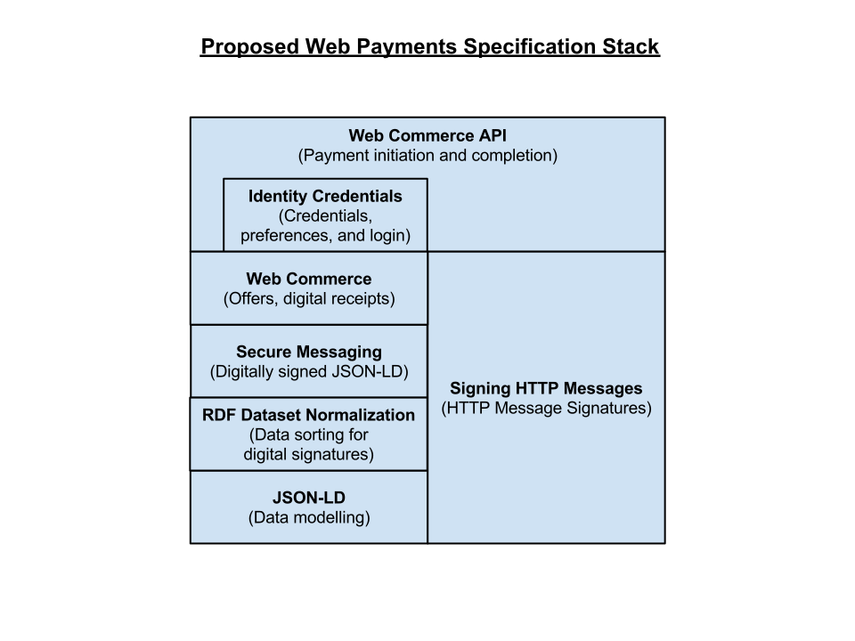
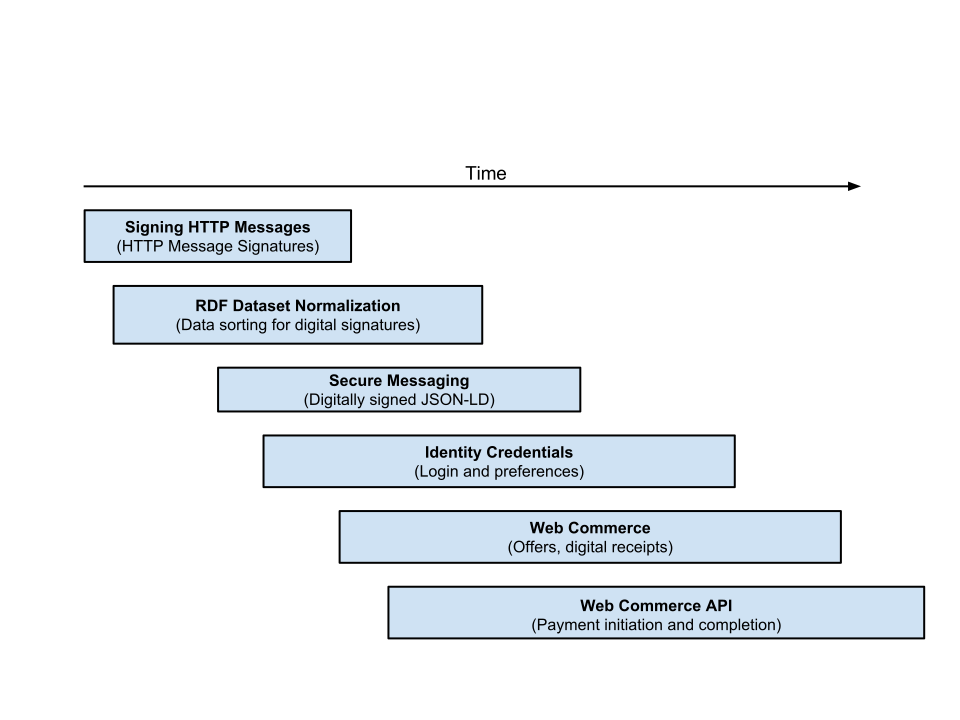

Active Collaborators
The following organizations are expected to be directly involved in the
creation of the technologies outlined in this roadmap:

This roadmap document outlines the proposed technology stack and development timeline for the set of technologies being worked on by the Web Payments Community Group.
This is an experimental document that is being actively worked on by the W3C Web Payments Community Group. All feedback on this document should be sent to public-webpayments@w3.org (archive).
This document outlines the technology stack and development timeline for the set of technologies being worked on by the Web Payments Community Group. It is intended for those people that want to understand all of the technical pieces being proposed, how they fit together, and the development timeline for each technology.
Readers should understand that this roadmap document is a work in progress and while many of the technologies discussed in this document have been implemented and are in production, others may be changed or modified heavily if driven through a standardization track at W3C. This document is a proposed roadmap, not the final roadmap for version 1.0.
A common question that's raised when someone is introduced to the Web Payments work is whether or not a particular payment technology, like blockchain-based ledgers, are supported or whether their existence invalidates the specification stack that is being proposed. In general, the realization that the Web Payments Community Group has come to over the many years that it has been operating is that there will never be only one way of doing payments. Therefore, the specifications that are being proposed do not assume a single dominating payment instrument or technology. Instead, the specifications focus on the more general mechanisms that are required to express a transaction and not the specifics that move value from one account to another. For example, the technology proposed by this group primarily focuses on the following:
The Web Payments Community Group realizes the importance of supporting the current payment instruments that exist today (e.g. credit cards, ACH, electronic checks, etc.) as well as the established value benchmarks (e.g. WM Reuters Spot Rate) while also ensuring that the proposed technologies take other more future-facing solutions into account (e.g. blockchains, sidechains, smart contracts, DAOs, etc.) as well as new methods for algorithmic pricing and benchmarking. Rather than hard-coding each of these technologies into the Web Payments specifications, we take a more general approach. Each one of these current and future systems and technologies is supported in a generic way in order to ensure that the specifications remain as agnostic as possible to the underlying operation of each payment instrument, value benchmark, and payment clearing technology.
The Web Payments technology stack is designed on generally accepted design principles outlined for the Architecture of the World Wide Web[[WEBARCH]]. It also heavily re-uses W3C and IETF technology, such as JSON-LD [[JSON-LD-SYNTAX]] and HTTP [[RFC7230]]. A high-level diagram of the technology stack is shown below for reference: 
A description of the technologies shown in the diagram above is provided for those that may be unfamiliar with the technologies:
The technologies proposed by the group are layered in such a way to allow the base technologies to be re-used by other Web-based standards. Thus, there is a natural order of progression in developing these technologies, from low-level to high-level: 
The following organizations are expected to be directly involved in the
creation of the technologies outlined in this roadmap: